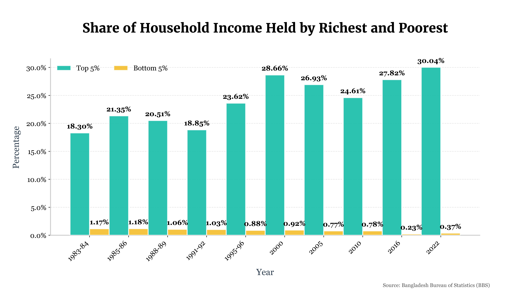

This project provides a visual analysis of the growing income disparity in Bangladesh over the last four decades. Using data from the Bangladesh Bureau of Statistics (BBS), I created a chart to illustrate the share of total household income held by the top 5% and bottom 5% of earners.
Key Findings
The visualization clearly shows a widening gap. While the income share of the wealthiest 5% has steadily increased, climbing from 18.30% in 1983-84 to a staggering 30.04% in 2022, the share for the poorest 5% has alarmingly decreased from 1.17% to just 0.37% in the same period. This highlights a significant trend of wealth concentration at the top.
Technologies Used
The data was processed and analyzed using Python with the Pandas library. The final visualization was created with Matplotlib and Seaborn, with careful attention to design principles to ensure the chart is both informative and easy to interpret.